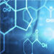

Врач-травматолог, хирург отделения суставной хирургии и артроскопии
НАТИВНЫЙ КОМПЛЕКС ПРОТИВ КОСТНО-СУСТАВНЫХ ЗАБОЛЕВАНИЙ
Полное избавление от болезней суставов
за 21 день
- Восстанавливает костную и хрящевую ткань
-
Мгновенно
облегчает боль -
Останавливает воспалительный
процесс - Избавляет от боли и отеков в суставах
-
Уничтожает
инфекцию
С КАКИМИ БОЛЕЗНЯМИ БОРЕТСЯ HONDROLOCK?
HONDROLOCK — уникальный комплекс против суставных болезней, не имеющий аналогов рынке.
Причина тому - особый состав с главным действующим веществом - вытяжкой пантов алтайского марала. Ценность пантов обусловлена богатым содержанием витаминов и микроэлементов (фосфор, калий, никель, кальций, кремний, натрий и дгрн), а также 18 аминокислотами из 22 существующих в природе.
В комплексной терапии с HONDROLOCK вы гарантированно
избавитесь от таких болезней, как:
Артрит
и артроз
Синовит
Остеохондроз
и остеопороз
Бурсит
ПОЧЕМУ НЕОБХОДИМО КОМПЛЕКСНОЕ ЛЕЧЕНИЕ?
Самая большая ошибка при лечении суставных болезней — использование исключительно наружних обезболивающих. Мази, гели, кремы и прочее способны облегчить или даже полностью устранить боль посредством "замораживания" нервных окончаний. Такой метод лечения приводит к печальным последствиям, поскольку сингал организма о проблеме - боль - заглушен, а воспалительный процесс продолжается. Именно поэтому крайне важен комплексный подход.

Крем для
наружного
применения
- Является природным анестетиком
- Мгновенно облегчает боль
- Способствует регенерации костной ткани
- Восстанавливает функции хрящевой ткани
Капсулы для приема внутрь
- Насыщают организм недостающими витаминами и минералами
- Восполняют недостаток синовиальной (костной) жидкости
- Улучшают усвояемость полезных веществ
- Выводят токсины из организма
ПОСЛЕДСТВИЯ И РИСКИ
Если суставы не лечить своевременно или лечить неправильно,
последствия неизбежны!
Деформация костей
Нестерпимая боль
Паралич
Полная потеря дееспособности
Какая болезнь портит вам жизнь?
| Болезнь | Симптомы | Последствия |
|---|---|---|
| Артрит и артроз | Боль при движении и в состоянии покоя. Хруст. Затрудненное движение. | Возникновение шпор и кистообразных структугрн Деформация сустава. Полная неподвижность. |
| Остеохондроз и остеопороз | Периодическое онемение конечностей. Боль в спине и позвоночнике. Боль в области сердца и ребегрн | Протрузия и грыжа диска в шейном отделе. Сосудистые нарушения. |
| Бурсит | Сильный отек в области поврежденного сустава. Нарушение подвижности сустава или полная неподвижность конечности. Болезненные ощущения при пальпации. Покраснение кожи с нечеткими границами в области опухоли. | Поражение гноем тканей. Заражение крови. Появление свищей. Полная потеря двигательной способности сустава. |
| Синовит | Скованность движений. Боль при пальпации. Поражение больших суставов. Интенсивные неприятные ощущения и отечность в пораженной области. | Заражение крови. Паралич. |
Принимайте
HONDROLOCK дважды
в день в течение 21 дня — и забудьте о болезни навсегда
Заказать
HONDROLOCK — ЭТО:
- Комплексное устранение заболевания
- Лечебное воздействие на пораженные ткани
- Мгновенное обезболивание
- Прямое воздействие на источник боли
- Регенерация поврежденных тканей
- Профилактика суставных и костных заболеваний
При отсутствии правильного лечения больные суставы дают тяжелейшие осложнения на весь организм. Во избежание непоправимых последствий в виде частичного или полного паралича приступайте к лечению как можно скорее!

НЕЗАВИСИМЫЕ ИССЛЕДОВАНИЯ
В 2016 году были проведены исследования с участием 1700 добровольцев с разной степенью запущенности заболевания суставов. Согласно условиям, испытуемые в течение первых 30 дней использовали крем и принимали капсулы HONDROLOCK дважды в день. Далее следовал 30-дневный отдых и при необходимости повторение курса. По окончанию эксперимента на основании полученных данных была составлена статистика.
- 97% участников ощутили мгновенное облегчение боли
- 84% испытуемых победили болезнь за один курс лечения
- 66% вернулись к активной жизни спустя неделю после окончания курса
- 81% отметили общее улучшение самочувствия и прилив сил
Комментарий хирурга:
Как правило, ко мне обращаются на той стадии заболевания, когда требуются срочные меры. До того, как болезнь превращает жизнь в бесконечные мучения, пациенты спасаются подручными средствами сомнительной эффективности.
Важно понимать две вещи: 1) чем раньше начать лечение, тем эффективнее будет результат, 2) суставные болезни невозможно вылечить одними мазями, потому что основная причина заболевания находится внутри. Поэтому ведущую роль в лечении суставов играют лекарственные средства для приема внутрь. В то время как мази, кремы и гели созданы для снятия спазма, облегчения болевых ощущений.
Для лечения суставных болезней рационально подобрать комплексное решение. Наиболее эффективным средством в борьбе с суставными болезнями в доказательной медицине сегодня являются крем и капсулы HONDROLOCK. По опыту скажу, что 90% больных излечиваются полностью всего за один курс приема. Для меня как для врача это высокий показатель, поэтому своим пациентам советую только HONDROLOCK.
Михаил Иванович Зотов
Применение HONDROLOCK
Крем для наружного применения:
1. Освободите больной участок тела от одежды.
2. Выдавите на руки небольшое количество крема и разотрите в руках.
3. Тонким слоем нанесите на пораженный участок.
Капсулы для приема
внутрь:
1. Утром натощак за 30 минут до завтрака примите капсулу №1.
2. За 30 минут до ужина примите капсулу №2.
3. Запивайте капсулы чистой водой (не менее 100 мл).
СОСТАВ hondrolock
Крем:
Биовытяжка пантов алтайского марала
Оказывает болеутоляющее и противовоспалительное действие, препятствует дальнейшему развитию болезни
Биовытяжка печени акулы
Улучшает состояние костной ткани, способствуют укреплению стенок кровеносных сосудов, препятствуют закупорке вен
Экстракт сабельника болотного
Снимает болевой синдром, укрепляет хрящевую ткань, придает ей эластичность
Плазма крови алтайского марала
Тонизирует кожу, снимает отек и воспаление
Экстракт алтайских трав
Способствуют регенерации костной и хрящевой ткани
капсулы:
Гидрохлорид глюкозамина
Стимулирует производство глюкозаминоглюканов, необходимых для восстановления хрящевой ткани

Нативный концентрат пантов марала
Укрепляет и стимулирует иммунитет, останавливает воспалительный процесс, обладает противоопухолевой активностью
Хондроитин
Увеличивает прочность связок при сжатии и растяжении, восполняет недостаток синовиальной жидкости суставов, которая выполняет смазывающую функцию
Мумие очищенное
Выводит токсины, улучшает кровоток, способствует очищению крови
Специально подобранный витаминно-минеральный комплекс
Способствует выработке собственного иммунитета против суставных болезней
Скованность в движении, периодическая резкая боль, воспалительные процессы... Больные суставы отравляют не только ваш организм, но и всю жизнь в целом.
Начните лечение сегодня, чтобы уже завтра почувствовать себя абсолютно здоровым!
начать лечение
Некоторые из 7 588 отзывов:

Геннадий Иволгин
46 лет
логист
Два года ужасно болел локоть, до врача дойти времени не было. Мазями кое-как перебивался, вроде легче становилось, а потом резко на локте появилась шишка, как при бурсите. Перепугался - страсть! Спасибо жене, настояла, чтоб я лечился как следует, принесла Хонролок. За пару дней отек сошел, боль совсем прекратилась. Наконец-то чувствую себя полноценным мужиком!
Галина Гетманова
39 лет
предприниматель
У меня нашли кисту под коленом, врач сказал, что сделать ничего не может, никак ее не достать. Пошла к другому врачу, назначил Хондролок два раза в день внутрь и наружно мазать колено. Легче как-то сразу стало, недели за три боль вообще пропала. Через полгода выяснилось, что киста чудесным образом рассосалась!
Анна Смусева
54 года
домохозяйка
Сломала ногу и очень долго лежала в больнице на растяжках, врач сказал, что ходить буду, но с периодическими болями придётся свыкнуться. Правда, терпеть было невыносимо, каждый шаг как испытание. Для восстановления тканей начала пить таблетки Хондролок, а чтоб ходить было легче - крем. Боли сократились сразу. Надеюсь, скоро совсем уйдут.
Виталий Володков
27 лет
программист
Болел позвоночник, не придавал этому особого значения, пока не приспичило - да так, что разогнуться не мог. Начал экстренную терапию Хондролоком: две таблетки разом с утра на голодный желудок и крем по 3-4 раза в день. За неделю вернулся к нормальной жизни!
НАТИВНЫЙ КОМПЛЕКС ПРОТИВ КОСТНО-СУСТАВНЫХ ЗАБОЛЕВАНИЙ
Комплексное лечение суставов за 21 день
Ощутите жизнь по-новому БЕЗ боли и дискомфорта
- Восстанавливает костную и хрящевую ткань
-
Мгновенно
облегчает боль -
Останавливает воспалительный
процесс - Избавляет от боли и отеков в суставах
-
Уничтожает
инфекцию